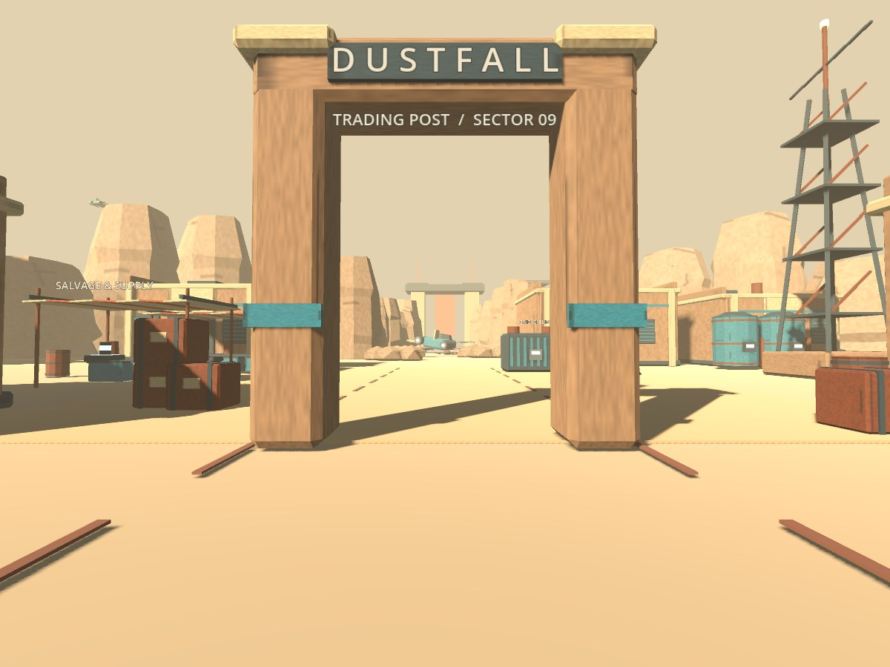

AN ORIGINAL EXPLORABLE WORLD
Dustfall
Outpost.
A forgotten trading post. A stranded ship. A little world at the edge of somewhere.
Walk beneath faded awnings, explore a quiet workshop, and follow the canyon to what the desert left behind.
GODOT + BLENDER · AI-ASSISTED PROCEDURAL 3D
DESKTOP & TOUCH · NO INSTALLATION
DESKTOP & TOUCH · NO INSTALLATION

DESERT MOON / SECTOR 09
ONE SMALL PLACE WORTH EXPLORING.